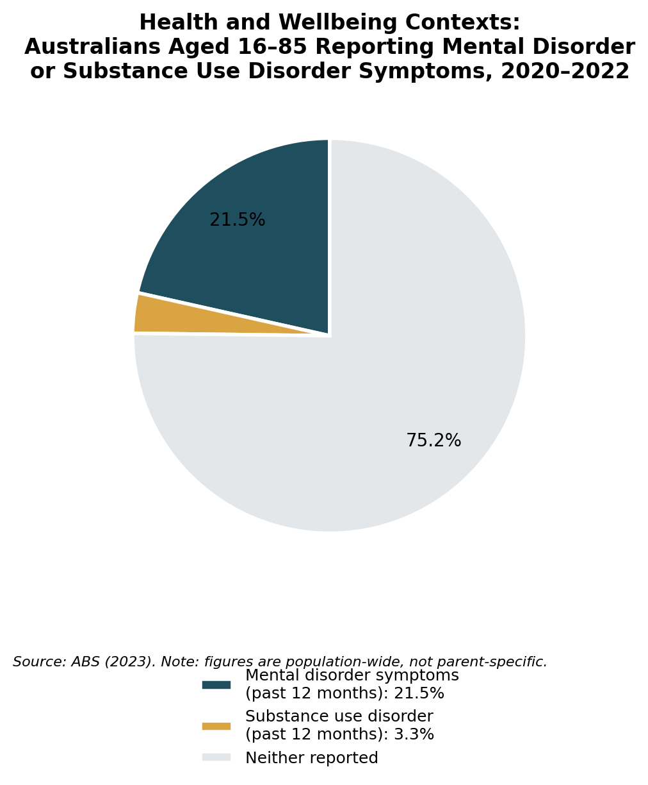

Health and Wellbeing Contexts
Parental mental illness and parental substance use, and their implications for early childhood education and care.
Understanding the Context
Parental mental illness may impact emotional aspects of availability or communication and routines. Parental substance use may involve aspects of harmful use through recovery. Neither determines parenting or maltreatment. The effects relate to severity and access to support – experiences differ within families given access to treatment and dependable support (Barriault et al., 2025; Landi et al., 2025). Such considerations must account for geographical access, language and understandings of wellbeing within families (Baker et al., 2022).
Family Systems Theory recognises how one member's health can shift roles and communication within a family (McMahon & Camberis, 2017). While interdisciplinary in nature, the theory functions effectively in a sociological study of services and structures, without blaming parents. An integrated form of support is preferable to separating parental treatment from children's needs (Barriault et al., 2025; Cibralic et al., 2025). The ECEC provides elements of continuity and referral, but responds to needs, not diagnoses.
Impact on Children and Families
Such changes can impact elements like sleep, attendance and concentration, as well as worry, responsibility or stigma within families. While these outcomes are not inevitable, accessible psychosocial interventions may ameliorate adjustment (Landi et al., 2025), and relationships exhibit regulatory effects in response to sustained stress exposures (National Scientific Council on the Developing Child, 2020).
Tiredness, distress or irregular attendance does not indicate parental incapacity. Services require both confidentiality and clear boundaries regarding reporting. In NSW, concerns must relate to parental factors and potential significant harm – educators refer to the Mandatory Reporter Guide rather than reporting any diagnosis or substance use itself (NSW Department of Communities and Justice [DCJ], 2024).
Social Policy and Australian Responses
The National Children's Mental Health and Wellbeing Strategy aims at children aged 0–12 but cannot guarantee access (National Mental Health Commission, 2021). The currently listed National Drug Strategy 2017–2026 does include a focus upon harm minimisation but no guarantee of family-inclusive treatment (Australian Government Department of Health, 2017). The First 2000 Days Framework does provide for coordination, though not on a specialist or rural workforce basis – educators contribute observations and participation whilst connecting consenting families with child-health services (NSW Ministry of Health, 2019).
Between 2020 and 2022, some 21.5% of Australians between 16 and 85 years showed signs of a mental disorder over the last year, while 3.3% experienced a substance use disorder (Australian Bureau of Statistics, 2023). Although not parent-specific, these figures provide some context for service need rather than family risk. Educators document, refer and include; they do not treat.

Strategies for Practice
Maintain relational continuity
Home-visiting evidence informs but does not directly test this ECEC application (Cibralic et al., 2025).
Allocate a key educator, retain routines and prepare children for staffing or collection changes – supporting security.
Use strengths-based partnerships
Parenting evidence and EYLF guidance inform an individualised partnership, rather than prove this intervention (Australian Institute of Family Studies, 2025; AGDE, 2022).
Meet privately and ask what will help; use preferred language and agreed priorities – protecting agency.
Build emotional literacy safely
The literature on psychosocial topics supports a child-focused intervention; fictional play is an evidence-informed translation (Landi et al., 2025).
Use puppets, drawing and stories which do not require disclosure – supporting expression without self-blame.
Develop a consent-based support plan
Integrated approaches capture both connected parent and child needs (Baker et al., 2022; Barriault et al., 2025).
With consent, record authorised contacts, routines, referrals and contingencies – improving continuity.
Apply trauma-aware referral procedures
Emotional safety must accompany NSW reporting duties (DCJ, 2024; National Scientific Council on the Developing Child, 2020).
Document observations and use the Mandatory Reporter Guide to offer warm referrals below threshold and report suspected significant harm.
Community and Professional Partnerships
Emerging Minds
Provides professional learning for infant and child mental health professionals – for educator development only.
Visit website →NSW Child and Family Health Services
Provides birth-to-five support with referral for wellbeing or developmental concerns.
Visit website →GP or perinatal mental-health clinician
A GP looks at general concerns whilst perinatal clinicians focus on pregnancy and the first postnatal year. With consent, help them find care.
Visit website →Family Drug Support Australia
Supports relatives and carers via a 24-hour line, education and meetings; does not provide parental treatment.
Visit website →ADIS NSW
Provides both alcohol-and-drug counselling and treatment referral; connect consenting adults with emergency pathways for danger.
Visit website →Resources for Educators and Children
Projects, Programs or Websites
Families/educators: use non-stigmatising information in conversations to promote family-wellbeing literacy.
Adults: use this to make respectful referrals, strengthening understanding and agency.
Parents/educators, birth–5: use these guidelines to talk about wellbeing and routines that support children.
Adults: support help-seeking and understanding; this is not child-facing.
Storybooks
 My Many Colored Days
My Many Colored DaysConnect colours with fictional feelings and build emotional vocabulary.
 The Rabbit Listened
The Rabbit ListenedCompare fictional responses to distress, supporting empathy and listening.
 Sometimes My Mommy Gets Angry
Sometimes My Mommy Gets AngryPreview and use voluntarily to talk about trusted adults and self-blame, without equating mental illness with anger.
 The Color Monster
The Color MonsterSort fictional feelings and learn to regulate, developing understanding and resilience.
Videos, Shows or Podcasts
 YouTube
YouTube YouTube
YouTubeIdentify trusted helpers and adapt US support information, strengthening a sense of belonging.
Focus on breathing and sensory awareness; helps regulation indirectly rather than explaining parental circumstances.
Use fictional relationships to support empathy and regulation, with an indirect contextual connection.
References
ABC Kids. (n.d.). Mindfully Me. iview.abc.net.au/show/play-school-mindfully-me
Australian Bureau of Statistics. (2023). National study of mental health and wellbeing, 2020–2022. www.abs.gov.au/statistics/health/mental-health/national-study-mental-health-and-wellbeing/latest-release
Australian Government Department of Education. (2022). Belonging, being and becoming: The Early Years Learning Framework for Australia (Version 2.0). www.acecqa.gov.au/sites/default/files/2023-01/EYLF-2022-V2.0.pdf
Australian Government Department of Health. (2017). National drug strategy 2017–2026. www.health.gov.au/resources/publications/national-drug-strategy-2017-2026
Australian Institute of Family Studies. (2025). Effective parenting programs: What does the evidence say? aifs.gov.au/resources/policy-and-practice-papers/effective-parenting-programs-what-does-evidence-say
Baker, E., Kaplun, C., & Dadich, A. (2022). Services working together to support children and their families. In R. Grace, J. Bowes, & C. Woodrow (Eds.), Children, families and communities: Contexts and consequences (6th ed., pp. 237–250). Oxford University Press.
Barriault, S., Motz, M., Firasta, L., McDowell, H., Labelle, P. R., Poole, N., & Racine, N. (2025). Effects of integrated programs for substance-involved mothers on infant and child development outcomes: A systematic review and meta-analysis. Infant Mental Health Journal, 46(6), 653–674. doi.org/10.1002/imhj.70029
Beyond Blue. (n.d.). Parenting and mental health. www.beyondblue.org.au/mental-health/parenting
Campbell, B. M. (2003). Sometimes my mommy gets angry (E. B. Lewis, Illus.). G. P. Putnam's Sons.
Cibralic, S., Wu, W. T., Ahinkorah, B. O., Lam-Cassettari, C., Woolfenden, S., Kohlhoff, J., Grace, R., Kemp, L., Johnson, P., Murphy, E., Deering, A., Raman, S., & Eapen, V. (2025). Systematic review and meta-analysis of home visiting interventions aimed at enhancing child mental health, psychosocial, and developmental outcomes in vulnerable families. BMC Pediatrics, 25, Article 314. doi.org/10.1186/s12887-025-05580-1
Doerrfeld, C. (2018). The rabbit listened. Dial Books.
Emerging Minds. (n.d.). Emerging Minds. emergingminds.com.au/
Family Drug Support Australia. (n.d.). Family Drug Support. www.fds.org.au/
Healthdirect Australia. (n.d.). Service finder. www.healthdirect.gov.au/australian-health-services
Landi, G., Pakenham, K. I., Bao, Z., Cattivelli, R., Crocetti, E., Tossani, E., & Grandi, S. (2025). Efficacy of psychosocial interventions for young offspring of parents with a serious physical or mental illness: Systematic review and meta-analysis. Clinical Psychology Review, 118, Article 102569. doi.org/10.1016/j.cpr.2025.102569
Llenas, A. (2018). The color monster. Little, Brown Books for Young Readers.
McMahon, C., & Camberis, A.-L. (2017). Family as the primary context of children's development. In R. Grace, K. Hodge, & C. McMahon (Eds.), Children, families and communities (5th ed., pp. 119–143). Oxford University Press.
National Mental Health Commission. (2021). The national children's mental health and wellbeing strategy. www.mentalhealthcommission.gov.au/projects/childrens-strategy
National Scientific Council on the Developing Child. (2020). Connecting the brain to the rest of the body: Early childhood development and lifelong health are deeply intertwined (Working Paper No. 15). Center on the Developing Child at Harvard University. developingchild.harvard.edu/resources/working-paper/connecting-the-brain-to-the-rest-of-the-body-early-child-development-and-lifelong-health-are-deeply-intertwined/
NSW Department of Communities and Justice. (2024). The mandatory reporter guide (MRG). dcj.nsw.gov.au/children-and-families/protecting-our-kids/mandatory-reporters/mandatory-reporters--what-to-report-and-when/the-mandatory-reporter-guide--mrg-.html
NSW Health. (n.d.). Child and family health services. www.health.nsw.gov.au/child-family-health-services
NSW Ministry of Health. (2019). The first 2000 days framework (PD2019_008). www1.health.nsw.gov.au/pds/ActivePDSDocuments/PD2019_008.pdf
NSW Ministry of Health. (n.d.). Alcohol and Drug Information Service. yourroom.health.nsw.gov.au/getting-help/Pages/ADIS.aspx
Raising Children Network. (n.d.). Parenting and mental health. raisingchildren.net.au/grown-ups/looking-after-yourself/mental-health-before-after-birth
Sesame Workshop. (2019, October 10). It's not your fault [Video]. YouTube. www.youtube.com/watch?v=0sjZ8ngKDHI
Sesame Workshop. (2019, October 10). Lending a hand [Video]. YouTube. www.youtube.com/watch?v=5pfuEqGhREA
Seuss, Dr. (1996). My many colored days (S. Johnson & L. Fancher, Illus.). Alfred A. Knopf.
Smiling Mind. (n.d.). Smiling Mind Creek. www.smilingmind.com.au/smiling-mind-creek